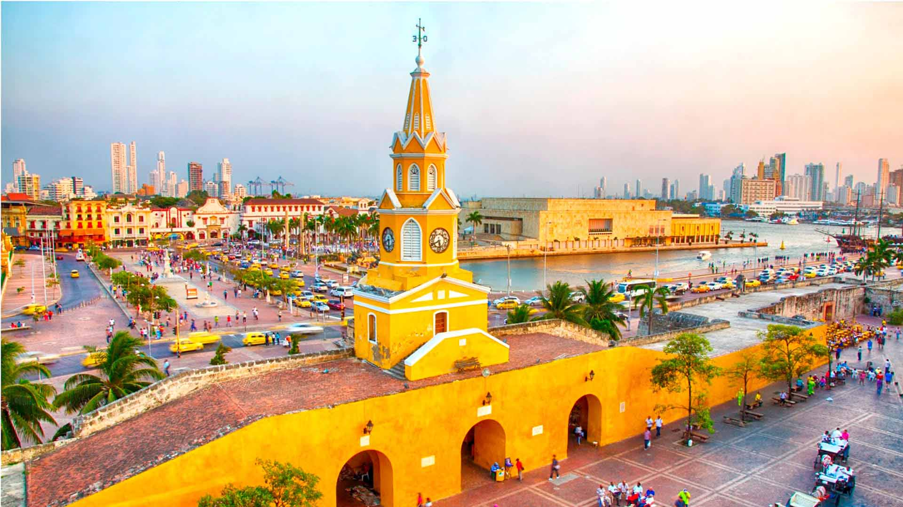
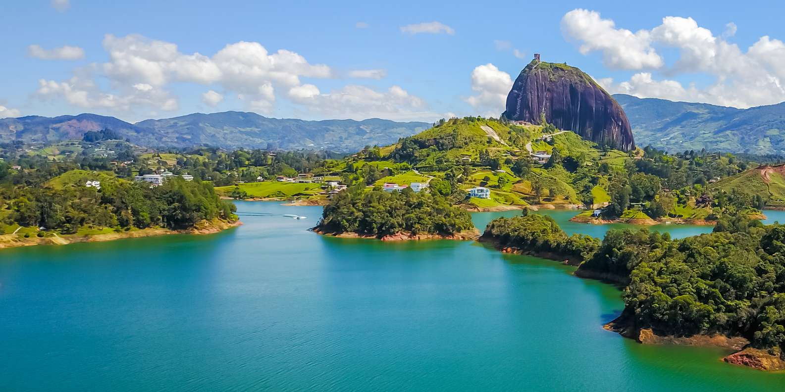
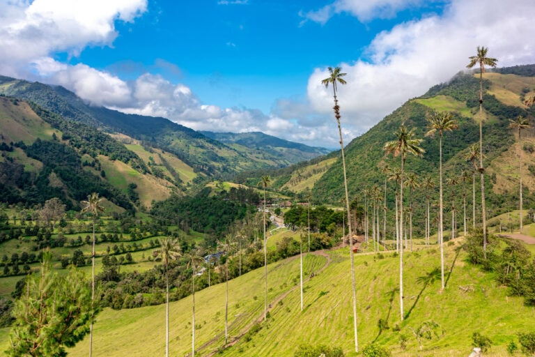
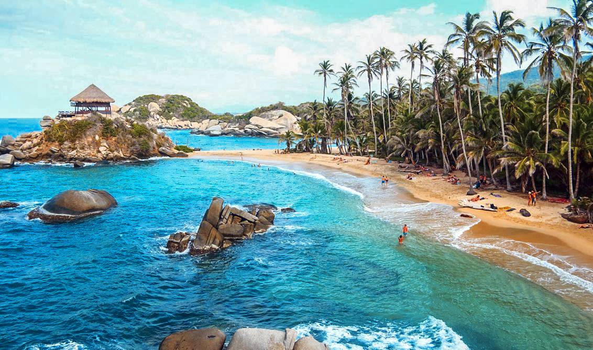
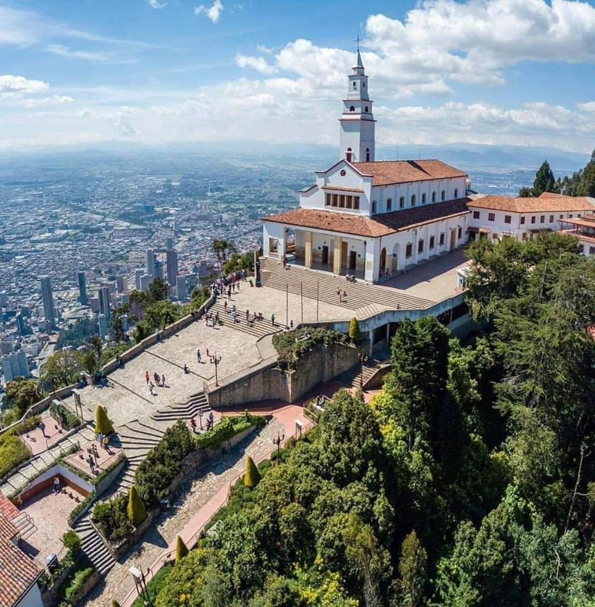
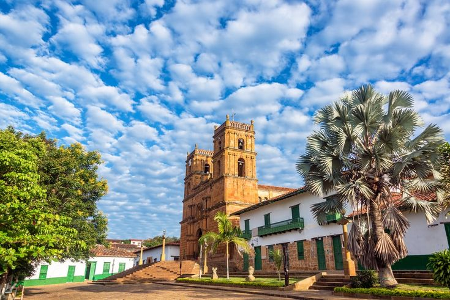
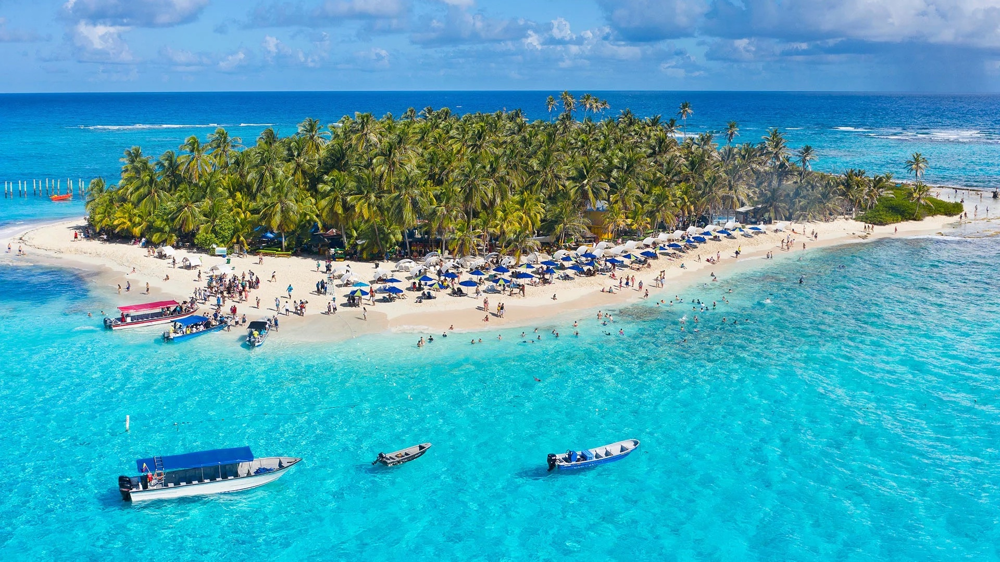
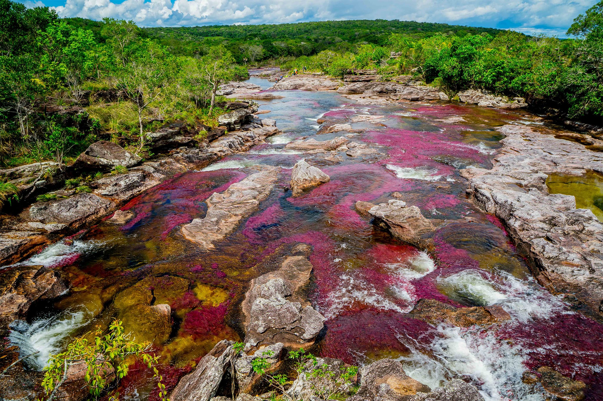
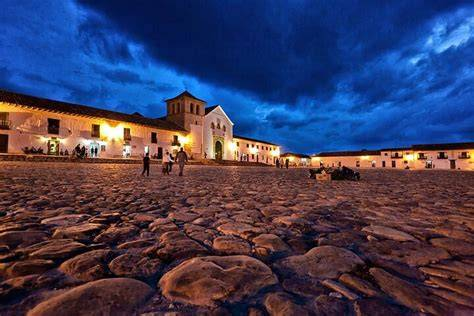

Cartagena
Una ciudad costera reconocida por sus murallas, calles coloniales y arquitectura llena de color.

Guatapé
Sus paisajes, el embalse y la Piedra del Peñol convierten a Guatapé en un destino inolvidable.

Valle de Cocora
Un paisaje natural del Quindío caracterizado por sus altas palmas de cera y montañas verdes.

Parque Tayrona
Este parque combina playas, senderos, vegetación tropical y paisajes del mar Caribe.

Monserrate
Desde la montaña de Monserrate se puede observar una amplia vista de Bogotá y sus alrededores.

Santander
Sus montañas y cañones ofrecen escenarios ideales para conocer la naturaleza y practicar aventura.

San Andrés
La isla se destaca por sus playas y por las diferentes tonalidades azules de su mar.

Caño Cristales
Este río es reconocido por los colores que adquieren sus plantas acuáticas durante determinadas temporadas.

Villa de Leyva
Sus calles empedradas, su plaza principal y sus construcciones conservan un ambiente colonial.